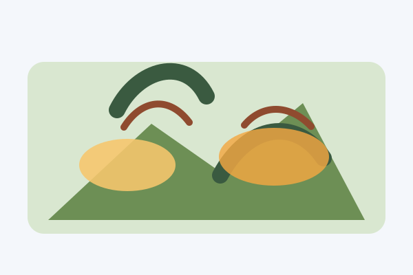
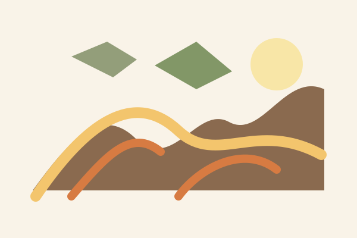
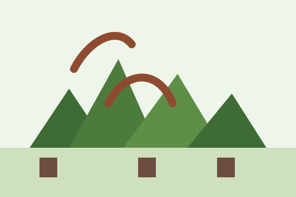

Water & Air Pollution
Mining releases harmful waste that poisons rivers, coastlines, and air quality, threatening people and wildlife.
Defending Sibuyan Island—The "Galapagos of Asia"—From Destructive Extraction.
An Ecological Paradise Under Direct Threat
Sibuyan Island, isolated geographically for millions of years within the Romblon province, is widely recognized as the "Galapagos of Asia." It hosts one of the densest distributions of unique, endemic plant and animal species on Earth, centered around the magnificent towering backdrop of Mount Guiting-Guiting.
Despite decades of local protection and ongoing community resistance, large-scale mining activities and aggressive exploration setups continue to target the island's vast nickel reserves. These efforts jeopardize vulnerable pristine watersheds, trigger heavy mountain soil erosion, and threaten to dump damaging runoff onto local agricultural and municipal coastlines.

Mining releases harmful waste that poisons rivers, coastlines, and air quality, threatening people and wildlife.

Removing mountain cover weakens slopes and increases erosion, which can trigger landslides and destroy farms.

Large mining operations flatten forests, displace species, and break the ecological balance of entire islands.
True advocacy protects both our nature and the hardworking communities. We propose realistic, regenerative alternatives that provide stable income without tearing down our forests.
Former mining workers possess unique, in-depth navigational familiarity with the mountain layouts. Certifying individuals as accredited forest guides, structural eco-rangers, and wildlife conservation monitors creates steady income rooted directly in ecosystem preservation.
Rather than clearing land, workers can transition into managing permanent high-value native crops like premium organic cacao, pili nuts, and root crops below established tree canopies. This provides lasting agricultural income while maintaining watershed safety.
Shifting focus to municipal coastlines, workers can build highly viable setups for sustainable seaweed farming (agar-agar) or join localized ocean watch groups (Bantay Dagat) to protect coastal fisheries from destructive commercial activities.